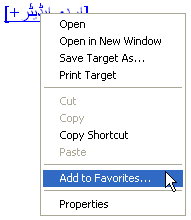
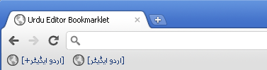

Urdu Editor Bookmarklet
This page provides you with the information about using the Urdu editor bookmarklet. The Urdu editor bookmarklet turns any text input area on any website into an Urdu editor. This way you can type Urdu in websites such as Google, Facebook, Wikipedia etc. by using this bookmarklet. The following video demonstrates the use of the Urdu editor bookmarklet.
About the Urdu Editor
Urdu editor referes to the web-based Urdu editor Urdu WebPad. This Urdu editor provides a phonetic Urdu key mapping as shown in the following figure:
Normal state
Shift state
The language mode can be toggled either by using the button controls or by using the CTRL+SPACE short-cut.
Using Urdu Editor Bookmarklet
Use the following links to find instructions for using the Urdu editor bookmarklet on different web browsers.
Using Urdu Editor Bookmarklet in Internet Explorer
Perform the following steps:
Press Ctrl+Shift+B so that the Bookmarks toolbar is always visible. Drag this link [اردو ایڈیٹر] or this link: [+اردو ایڈیٹر] to the Bookmarks toolbar.

Click "Yes" for the security message shown by Internet Explorer.Choose "Links" as the directory where the bookmarklet should be created.

After following the above steps, a bookmark with name [اردو ایڈیٹر] should appear in the Internet Explorer Links toolbar as follows:
If you do not see the the bookmark, follow these additional steps:- Make sure that the Links toolbar is visible. Right-click on
empty space in Internet Explorer toolbar area and confirm that the
Links toolbar is checked:

- Make sure that the toolbars are unlocked. To unlock toolbar, right-click on empty space in Internet Explorer toolbar area and uncheck the "Lock the Toolbars" option.
- Drag the Links toolbar to left side. Your toolbar will now look
like:
Using Urdu Editor Bookmarklet in Firefox
Perform the following steps:- Right-click this link: [اردو ایڈیٹر] or this link:
[+اردو ایڈیٹر].
- Click on "Bookmark This Link".

- Choose "Bookmarks Toolbar" in the "Folder" option.
- Click "Done".
After following the above steps, a bookmark with name [اردو ایڈیٹر] should appear in the Firefox Bookmark toolbar as follows:
If you do not see the the bookmark, follow this additional step:
Make sure that the Bookmarks toolbar is enabled. Right-click on the empty space next to "Help" menu and click on the "Bookmarks Toolbar" option:
Using Urdu Editor Bookmarklet in Google Chrome
Perform the following steps:- Press Ctrl+B so that the Bookmarks toolbar is always visible. You can also make the Bookmarks toolbar visible going to Tools menu and clicking on Always show bookmarks bar
- Drag this link: [اردو ایڈیٹر] or this link: [+اردو ایڈیٹر] to the Bookmarks toolbar.
After following the above steps, a bookmark with name [اردو ایڈیٹر] should appear in the Chrome Bookmark toolbar as follows:

Using Urdu Editor Bookmarklet in Safari
- Press Ctrl+Shift+B so that the Bookmarks toolbar is always visible.
- Drag this link [اردو ایڈیٹر] or this link: [+اردو ایڈیٹر] to the Bookmarks toolbar.
After following the above steps, a bookmark with name [اردو ایڈیٹر] should appear in the Safari Bookmark toolbar as follows: